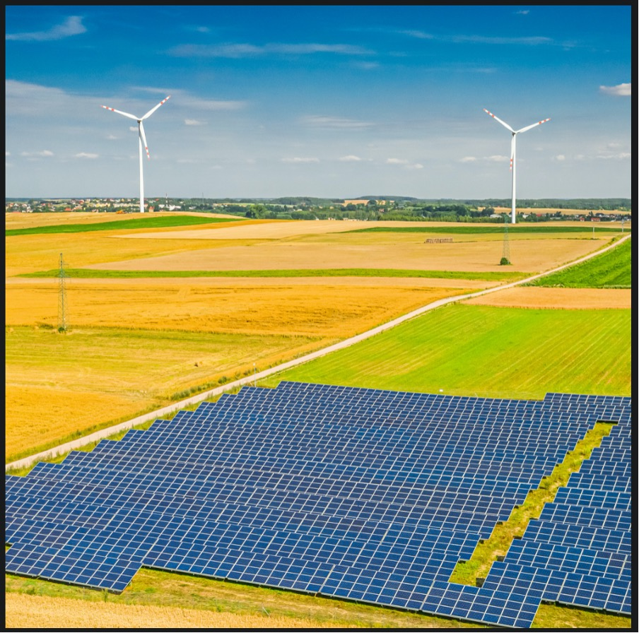

As it accelerates the transition to a clean energy environment to become carbon neutral by 2070, India is on track to overtake China as the world's third-largest ethanol user by 2026. According to the International Energy Agency (IEA), ethanol demand in India tripled between 2017 and 2021. IEA states that India has made "excellent progress" in expanding ethanol blending. Blending was 2% in 2017, though by the summer of 2021, it had reached 8%, bringing the country on target to attain 10% blending this calendar year. Government policies are viewed as the primary driver of demand growth. Other factors such as general transportation fuel consumption, prices, and policy design will also play a significant influence. PM Narendra Modi stated in June that the government is committed to meeting the aim of 20% ethanol blending in petrol by 2025. Previously, the targeted date was set as 2030. The target of obtaining 20% ethanol blending, on the other hand, has "significant problems," according to the IEA, who adds that "vehicle compatibility, GHG emissions and sustainability standards, availability of raw materials, and incentives to remain competitive will all demand special consideration." CRISIL analysts have stated that ethanol blending is expected to substitute around 16-18 million tones of petrol sales. Governments may speed renewables growth even further by tackling critical constraints such as licensing and grid integration concerns, societal acceptability issues, inconsistent regulatory approaches, and insufficient compensation. India is exploring several steps to boost ethanol production. It would not only assist to save capital, but it will also help to cut crude oil imports.
